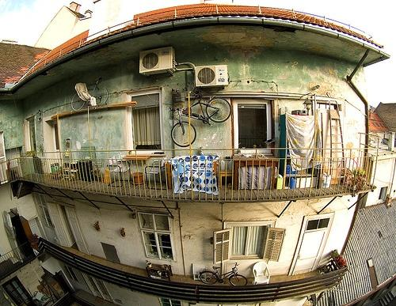

0.603136

0.638105
0.641550

0.674737

0.717981

0.727870

0.728526

0.730488

0.734704

0.767801
| Target image 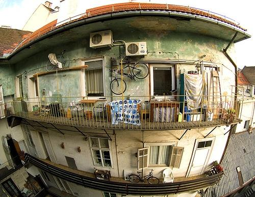 | 0.603136 | 0.638105 | 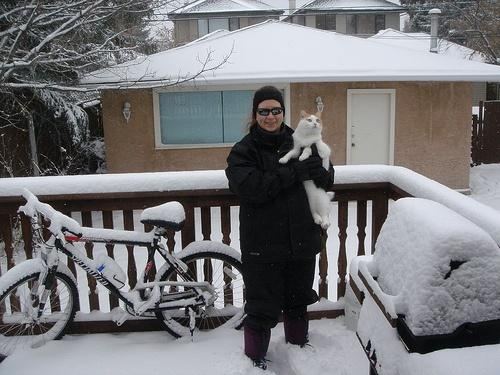 0.641550 | 0.674737 | 0.717981 | 0.727870 | 0.728526 | 0.730488 | 0.734704 | 0.767801 |
| Target image 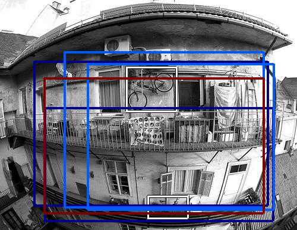 |  2665.389648 | 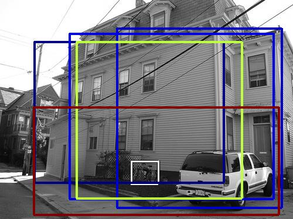 2582.021729 |  2276.505615 |  1905.976562 |  1864.489258 |  1698.429199 |  1682.542480 | 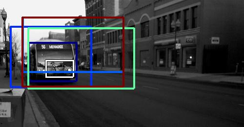 1654.169556 |  1622.902344 |  1618.868164 |
Target image | 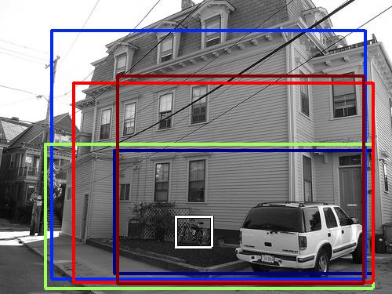 2189.043701 |  2129.508301 |  1991.445679 |  1931.541504 | 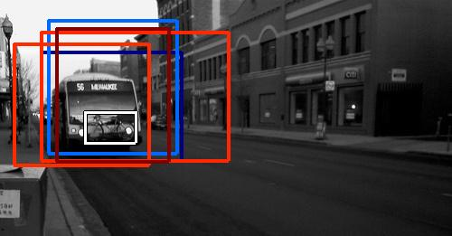 1766.204102 |  1766.164429 |  1605.514771 |  1574.774048 |  1546.413574 |  1541.892700 |
| Target image 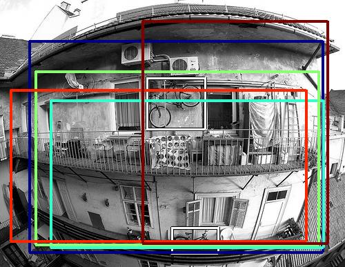 |  2614.423828 |  2234.404785 |  2045.926270 |  2018.053711 |  1971.327515 |  1954.159424 | 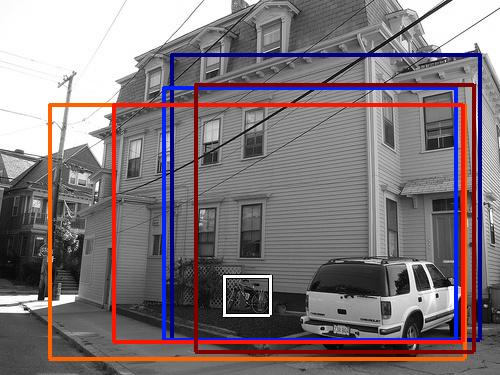 1940.250244 |  1890.695679 |  1847.784912 |  1789.308594 |
| Target image 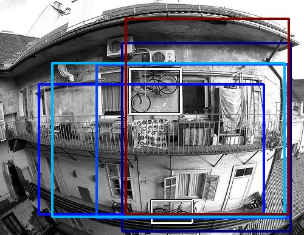 |  3093.711670 |  2015.773193 |  2009.659668 |  1985.488159 |  1982.930786 |  1947.271240 |  1932.555298 |  1750.459961 |  1656.432861 |  1623.066895 |